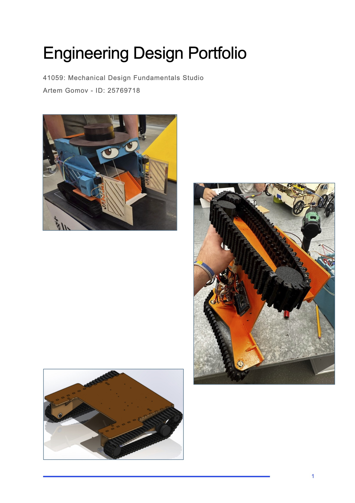
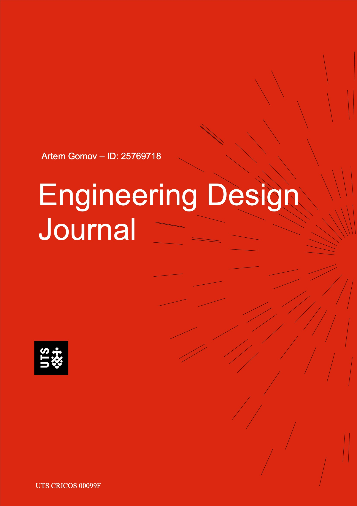
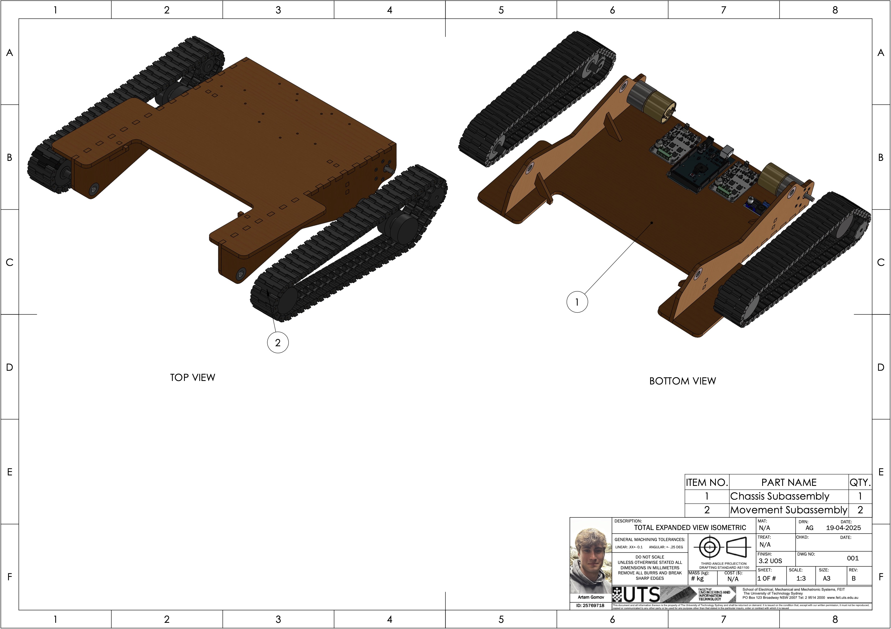
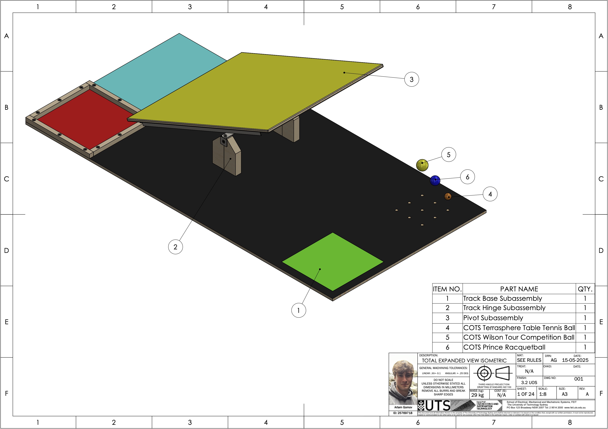
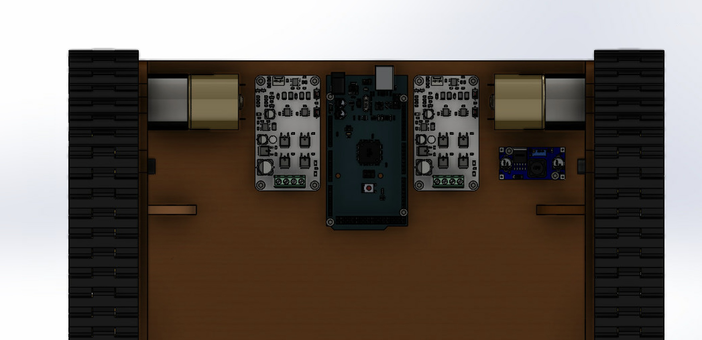

Feb 2025 - Jun 2025
Warman Challenge - Movement and Chassis Lead
Responsible for the design, manufacturing, and testing of the chassis and movement system for the 2025 Warman Challenge while thoroughly documenting all key learnings. Based on the competition's 2025 rules and requirements, I designed, built, and iterated multiple prototypes to achieve the challenge objectives while integrating them into a larger system. Leveraged both mechanical and mechatronics engineering knowledge to develop an effective and reliable system.







